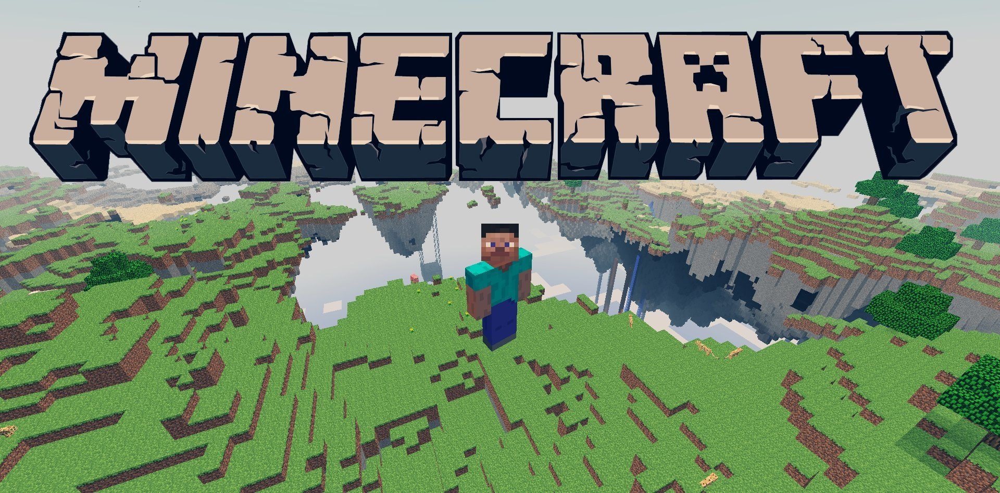

Mundo Minecraft
Construya, explore y sobreviva en un mundo hecho de bloques. Aquí encontrará los objetos más útiles del juego y una guía para su primera semana.
Ver objetos del juego
¿Qué es Minecraft?
Minecraft es un videojuego de mundo abierto donde todo está hecho de bloques que se pueden romper, recolectar y colocar. Cada mundo se genera a partir de una semilla, por lo que no hay dos aventuras idénticas.
Lo creó el sueco Markus «Notch» Persson, que publicó las primeras versiones en 2009. La versión completa salió el 18 de noviembre de 2011 y Microsoft compró el estudio Mojang en 2014. Hoy se juega en ordenador, consolas y móviles.
Consejo de inicio: su primera meta es siempre la misma, conseguir madera antes de que anochezca.
Modos de juego
- Supervivencia: se debe recolectar recursos, comer y defenderse de los monstruos.
- Creativo: bloques ilimitados y vuelo, ideal para construir sin límites.
- Aventura: pensado para mapas creados por otros jugadores, con restricciones al romper bloques.
- Espectador: permite recorrer el mundo atravesando bloques sin interactuar.
- Hardcore: supervivencia en dificultad máxima; si el jugador muere, pierde el mundo.
Cinco cosas interesantes
- El mundo tiene tres dimensiones: la superficie, el Nether y el End.
- La redstone permite fabricar circuitos, puertas automáticas y hasta calculadoras.
- El Dragón de Ender es el jefe final que vive en el End.
- Los mundos se generan desde una semilla: compartirla permite explorar el mismo paisaje.
- Según cifras de Microsoft de 2023, se han vendido más de 300 millones de copias.